Home
Sustainable Dundee's Goals
These are our current goals aimed at both helping the local and global environment; and making the lives of our local community better (resulting in things such as reduced fuel poverty and improved air quality). Each goal we think is more than achievable, and we believe with a little work we can make Dundee a more sustainable city.
Goal 2 - Zero Hunger
Goal 3 - Good health and well-being
Goal 4 - Quality Education
Goal 5 - Gender Equality
Goal 6 - Clean water and sanitation
Goal 7 - Affordable & Clean energy
Goal 8 - Decent work & economic growth
Goal 9 - Industry, innovation & infastructure
Goal 10 - Reduced inequality's
Goal 11 - Sustainable cities & communities
Goal 12 - Responsible consumption & production
Goal 13 - Climate Action
Goal 14 - Life below water
Goal 15 - Life on land
Goal 16 - Peace, Justice & strong institutions
Goal 17 - Partnerships for the goals
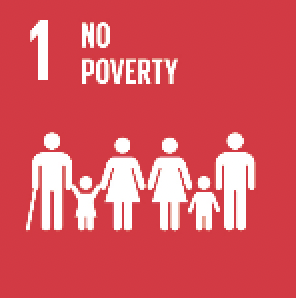
- Implement Dundee's Fairness Strategy and Action Plan.
- Test a new model of advice on welfare benefits and budgeting to decrease the number of people affected by debt.
- Increase the number of Dundee organisations and businesses signed up to the Scottish Living Wage and seek to have Dundee accredited as a 'Living Wage City'.
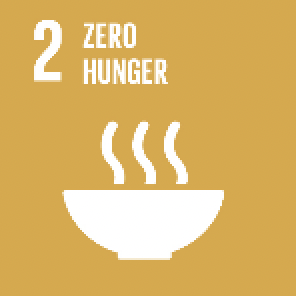
- Support the delivery of a 'Fun and Food' programme giving families access to free meals and activities during school holidays.
- Streamline procedures for applying for Free School Meals to maximise take-up.
- Work with Greenspace Scotland to develop a Local Food Growing Strategy and expand the number of community growing projects and support them with skills training, materials and capacity building.
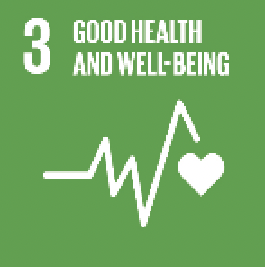
- Reduce teenage pregnancy and implement a strategy on Pregnancy and Parenthood in Young People.
- Improve identification and responses to children at risk of harm from parental substance misuse.
- Work with NHS Tayside and Scottish Natural Heritage to develop a Green Health Partnership, linking health care and greenspace initiatives.
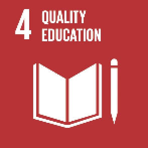
- Deliver the Scottish Attainment Challenge and use Pupil Equity Funding to provide extra supped to pupils with identified needs.
- Develop new and refurbished school buildings that support learning.
- Develop an 'Aspire and Achieve' project that supports young people from the most deprived areas to access and sustain college paces.
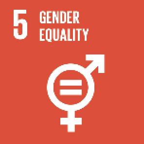
- Increase the % of employees in the top salary bonds who are female.
- Work with partners on initiatives to prevent domestic abuse, target perpetrators and support victims.
- Improve a range of services that coil, in practice, impact particularly on women eg expand provision of early years and childcare and improve support for carers.
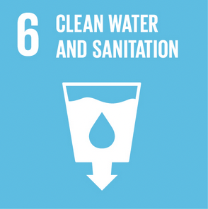
- Undertake flood protection schemes between Camperdown Dock and Dundee Airport and in Droughty Ferry.
- Work with Scottish Water to improve the ands water/sewage infrastructure.
- Undertake coastal and watercourse inspections and organise repairs and maintenance as part of our Flood Risk Management plan.
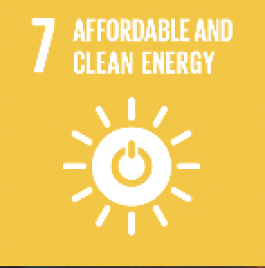
- Maximise the External Wall Insulation programme to reduce fuel bills and carbon emissions.
- Increase the number of District Heating Schemes and develop a low Carbon District Energy Hub at the Regional Performance Centre tor Sport.
- Install photovoltaic panels on new buildings and major refurbishments (eg schools. sports centres, community buildings) where feasible.
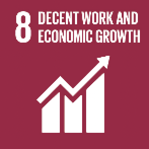
- Develop a programme to reach, engage and provide intensive early support to those most at risk of long term unemployment, including multi-agency community hubs delivering employability support in two areas of the city.
- Develop a skills development pathway which will enable people to progress into better paid employment and tackle in-work poverty.
- Develop facilities to promote skills development eg. a regional hospitality and tourism centre.
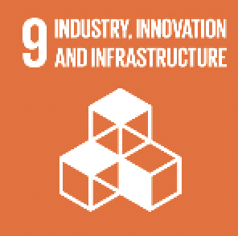
- Establish Dundee as a location for oil and gas decommissioning and renewables.
- Develop Incubation facilities and affordable workspace for the creative sector.
- Develop and implement a revised Social Enterprise Action Plan for the city.
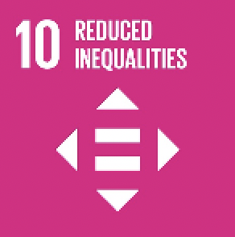
- Develop a single Equality Plan to address discrimination due to disability, race, religion, gender, LGBT or age, and the duty of socio-economic inclusion.
- Develop a single gateway to provide early support to those with a hearth condition or disability who are in work, off sick or recently unemployed.
- Deliver a Breakthrough Mentoring Programme for Looked After Children and ensure all looked after children have access to advocacy support.
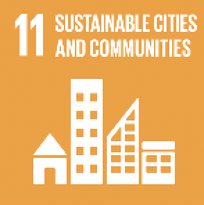
- Build 1,000 new affordable homes over 5 years.
- Continue to develop the city's electric vehicle charging infrastructure and the Council's own fleet of electric vehicles.
- Improve neighbourhood bus services, develop a financially sustainable model of accessible transport and implement a range of 'active travel' projects which encourage people to walk, cycle or use public transport.
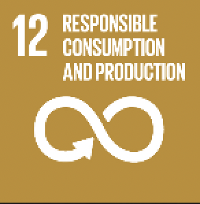
- Complete the roll-out of a new household recycling service which meets the Charter for Recycling and Code of Practice.
- Rationalise use of the Council's buildings, land and vehicles to achieve efficiencies and minimise our impact on the environment.
- Reduce energy consumption in Council buildings through measures such as SMART metering, Building Energy Management systems and behavioural changes, and expand the use of LED streetlighting.
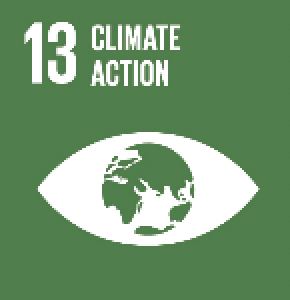
- Publish a Strategic Energy and Crenate Change Action Plan, designed to deliver sustained reduction in CO2 emissions, and undertake a Climate Change Risk and Vulnerability Assessment.
- Deliver a range of projects promoting low carbon fuels. including expanding the % of electric vehicles in the city.
- Implement the most appropriate option from the National Low Emission Framework to improve air quality.
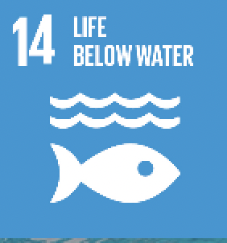
- Contribute to maintaining the water quality of the River Tay, which supports a wide range of internationally recognised habitats.
- Continue to maintain the wildlife corridor of the Dighty Burn, which promotes habitat continuity and supports conservation.
- Maintain the Beach Award for Broughty Ferry beach, working in partnership with the Community Council, SEPA, Port Authority, Scottish Water and Scottish Natural Heritage to manage the beach.
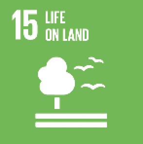
- Prepare a new Bio-diversity Duty Plan, with actions on sites, habitats, species and people.
- Encourage citizens to take personal and shared responsibility for the environment through the 'Take Pride In Your City' campaign.
- Complete the regeneration of Dundee Law and continue to invest in improvements to our green spaces in partnership with community groups.
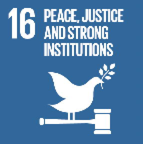
- Introduce a new Community Infrastructure Fund, using the 'Dundee Decides' participatory budgeting process to give local people a say in spending on local infrastructure.
- Deliver a more integrated health and social care service through Dundee Health and Social Care Partnership.
- Support Dundee's Protecting People Framework, which co-ordinates multi-agency work on child protection, vulnerable adults, violence against women, alcohol and drug misuse and racist incidents.
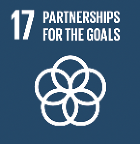
- Recognise Dundee Third Sector Interface - which supports social enterprises and the voluntary sector - as an equal pastier in the delivery of the City Plan.
- Deliver on the follow up to Dundee Fairness Commission, with people who have personal experience of poverty working with senior civic and business leaders to make proposals around key areas of anti-poverty work, and establish a Drugs Commission on a similar model.
- Work with partners in the Tay Cities Region Joint Committee to manage the principal levers of economic growth across local government boundaries within Tayside.